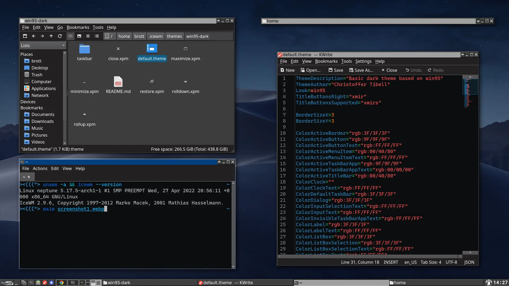
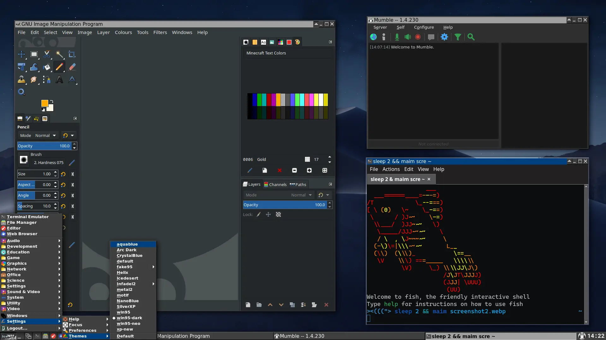

Screenshots
Show/hide
 Download
Clone the repo using git
Run the following commands.
mkdir -p $HOME/.icewm/themes git clone https://github.com/Brottweiler/win95-dark.git $HOME/.icewm/themesRun
git pull to get new updates.
Download repo as an archive
Download the repo as a Zip archive. Extract it and place the win95-dark-master folder into ~/.icewm/themes.
Get the latest release
Go to the releases page and download the latest release tarball. Extract it into ~/.icewm/themes.
Fork the repo
If you want to fork the theme or just read the code, you can find the repo here.